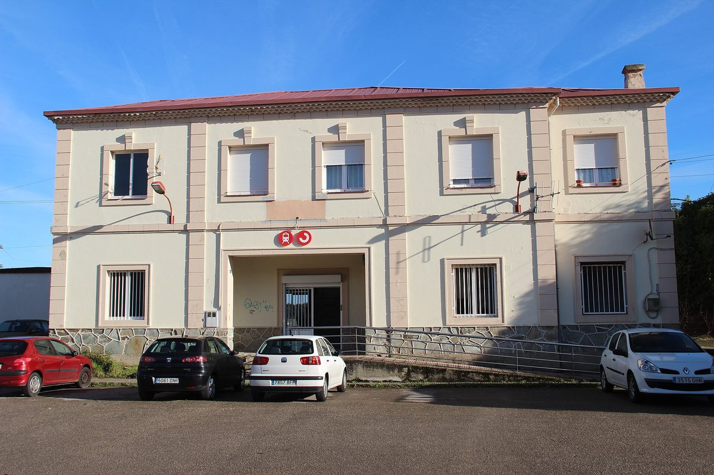

스페인 아스투리아스 에너지 공동체, 2024년부터 20곳 넘게 생겨…주 에너지재단이 11곳 동행, 보조금 110만 유로

무로스데날론 '무로스 에네르시아', 주민 모임 제안에 시청이 참여…시 체육관 지붕 20.24kWp로 주민 8명·시청에 공급 앞둬, 용량 모자라 대기 주민 16명
스페인 북부 아스투리아스 지방에서 2024년 처음 생기기 시작한 에너지 공동체가 보조금에 힘입어 올해 크게 늘면서 20곳을 넘어섰다. 아스투리아스 에너지재단(FAEN)의 아나 가르시아 아레나스는 10월 29일 아빌레스에서 열린 토론회 '혁신의 오후: 에너지 공동체, 누구를 위한 것인가'에서, 재단이 주 전역의 시청을 돌며 참여를 권했고 거절한 곳은 4곳뿐이었다고 설명했다(다만 나머지 모든 곳에 사업이 생긴 것은 아니다). 재단은 무로스데날론, 카브라네스, 테베르가, 산타에울랄리아데오스코스 등 11곳을 자문하며 함께하고 있고, 재단 설명에 따르면 이 11곳이 받은 보조금은 모두 110만5,210.24유로로 곳당 3만9,779.52유로에서 14만9,722유로까지이며 그중 3곳은 앞선 공모에서 지원받은 공동체를 넓히는 사업이다. 2024년 출발한 '무로스 에네르시아'는 주민 모임의 구상에서 시작해 주민들이 시청을 찾아가 참여시킨 뒤 재단과 절차를 밟았고, 지금은 시 체육관 지붕에 태양광 설치를 마무리하고 있어 올해 안에 발전을 시작할 것으로 기대된다. 설비 용량은 20.24kWp로 주민 8명과 시청에 전기를 대는데, 조합원 엘리오 카스타뇨는 용량이 모자라 이번에 함께하지 못한 주민 16명이 기다리고 있다고 전했다. 가르시아 아레나스는 태양광 패널을 놓을 넓은 공간이 필요하기 때문에 공동체에는 시청의 참여가 꼭 필요하다고 말했다.
시민에너지 관점
주민 8명과 시청이 쓰는 20.24kWp 설비 앞에 주민 16명이 줄을 섰다는 것은, 마을 단위 공동체 에너지를 가로막는 것이 주민의 관심이 아니라 지붕과 행정 절차라는 점을 보여 준다. 작은 공동체가 여러 곳에 흩어지면 비효율적이라는 우려도 있지만, 아스투리아스에서는 주 에너지재단이 시청을 하나하나 찾아가 4곳을 빼고 모두 설득했고 11곳을 자문하며 절차를 함께 밟아 작은 공동체가 혼자 짊어질 짐을 덜었다. 주민이 먼저 제안하고 시청이 공공건물 지붕을 내주며 공공 재단이 절차를 돕는 짜임이어야 발전의 몫이 외지 사업자가 아니라 그 마을에 남는다. 우리 지자체도 체육관·마을회관 같은 공공건물 지붕을 주민 공동체에 먼저 열고, 기다리는 주민이 생기면 다음 지붕으로 넓힐 수 있게 중간지원 조직과 예산을 함께 마련해야 한다.
출처: El Comercio 2026-10-29 Cristina Del Río 원문 보기
スペイン・アストゥリアス州のエネルギー共同体、2024年から20か所超に…州エネルギー財団が11か所に伴走、補助金110万ユーロ
ムロス・デ・ナロンの「ムロス・エネルシア」、住民グループの提案に町役場が参加…町の体育館屋根の20.24kWpで住民8人と役場に供給へ、容量不足で順番待ちの住民16人
スペイン北部アストゥリアス州で2024年に生まれ始めたエネルギー共同体が、補助金にも後押しされて今年大きく増え、20か所を超えた。アストゥリアス・エネルギー財団（FAEN）のアナ・ガルシア・アレナス氏は10月29日、アビレスで開かれた討論会「イノベーションの午後：エネルギー共同体は誰のためか」で、財団が州内の役場を回って参加を呼びかけ、断ったのは4か所だけだったと説明した（ただし残りのすべてで事業が動いているわけではない）。財団はムロス・デ・ナロン、カブラネス、テベルガ、サンタ・エウラリア・デ・オスコスなど11か所に助言し伴走しており、財団によるとこの11か所が受けた補助金は計110万5,210.24ユーロ、1か所あたり3万9,779.52ユーロから14万9,722ユーロで、うち3か所は前回の公募で支援を受けた共同体の拡張だという。2024年に始まった「ムロス・エネルシア」は住民グループの構想から生まれ、住民が役場に出向いて参加を取り付けたうえで財団と手続きを進め、現在は町の体育館の屋根で太陽光パネルの設置を仕上げており、年内の発電開始が見込まれている。設備容量は20.24kWpで住民8人と役場に電気を供給する予定で、組合員のエリオ・カスタニョ氏は、容量が足りず今回加われなかった住民16人が順番を待っていると話した。ガルシア・アレナス氏は、太陽光パネルを置く広い場所が必要なため、共同体には役場の参加が欠かせないと述べた。
市民エネルギーの視点
住民8人と役場が使う20.24kWpの設備に住民16人が順番待ちをしていることは、集落単位の共同体エネルギーを阻んでいるのが住民の関心ではなく屋根と行政手続きであることを示している。小さな共同体があちこちに散らばれば非効率だとの懸念もあるが、アストゥリアスでは州のエネルギー財団が役場を一つずつ訪ねて4か所を除いてすべてを説得し、11か所に助言しながら手続きをともに進め、小さな共同体が一人で背負う負担を軽くした。住民がまず提案し、役場が公共建物の屋根を差し出し、公的な財団が手続きを支える仕組みであってこそ、発電の取り分が外部の事業者ではなくその集落に残る。韓国の自治体も、体育館や集会所のような公共建物の屋根をまず住民の共同体に開き、順番待ちの住民が出れば次の屋根へ広げられるよう、中間支援組織と予算をあわせて用意すべきだ。
出典: El Comercio 2026-10-29 Cristina Del Río 原文を読む
西班牙阿斯图里亚斯能源社区自2024年起增至20多个…大区能源基金会陪伴其中11个，补贴110万欧元
穆罗斯德纳隆"穆罗斯能源"由居民团体提议、市政府加入…市体育馆屋顶20.24kWp即将为8名居民和市政府供电，因容量不足另有16名居民排队
西班牙北部阿斯图里亚斯大区2024年开始出现的能源社区，在补贴推动下今年大幅增加，已超过20个。阿斯图里亚斯能源基金会（FAEN）的安娜·加西亚·阿雷纳斯10月29日在阿维莱斯举行的研讨会"创新午后：能源社区为谁而建"上介绍，基金会走遍大区各市政府动员参与，只有4个拒绝（但其余市镇并非都已有项目）。基金会为穆罗斯德纳隆、卡布拉内斯、特维尔加、圣欧拉利亚德奥斯科斯等11个社区提供咨询和陪伴；据基金会介绍，这11个社区获批的补贴共计110万5,210.24欧元，每个从3万9,779.52欧元到14万9,722欧元不等，其中3个是对上一轮已获资助社区的扩建。2024年起步的"穆罗斯能源"源于一个居民团体的设想，居民们找到市政府争取其加入，再与基金会一起办理手续，目前正在市体育馆屋顶完成太阳能板安装，预计年内开始发电。装机容量为20.24kWp，将为8名居民和市政府供电；社员埃利奥·卡斯塔尼奥说，因容量不足，这次未能加入的16名居民正在排队等候。加西亚·阿雷纳斯表示，安装太阳能板需要很大的空间，因此能源社区离不开市政府的参与。
市民能源视角
8名居民和市政府使用的20.24kWp设备前排着16名居民，说明阻碍村镇级社区能源的不是居民的兴趣，而是屋顶和行政手续。有人担心小型社区分散各地效率不高，但在阿斯图里亚斯，大区能源基金会逐一拜访市政府，除4个外全部说服，并为11个社区提供咨询、一起办理手续，减轻了小社区独自承担的负担。只有居民先提议、市政府提供公共建筑屋顶、公共基金会协助办理手续，发电收益才会留在本村，而不是流向外来开发商。韩国的地方政府也应先把体育馆、村会馆等公共建筑屋顶向居民社区开放，并同时准备中间支援组织和预算，让排队的居民可以扩展到下一片屋顶。
来源: El Comercio 2026-10-29 Cristina Del Río 查看原文
Energy communities in Spain's Asturias pass 20 since 2024; regional energy foundation supports 11 that won €1.1 million in grants
In Muros de Nalón, residents' group persuaded the town hall to join 'Muros Enerxía'; 20.24kWp on the municipal sports hall roof set to supply 8 residents and the town hall, with 16 more residents waiting for lack of capacity
Energy communities in Asturias, in northern Spain, which first began to form in 2024, have grown sharply this year with the help of subsidies and now number more than 20. At a debate in Avilés on 29 October titled 'Innovation Afternoons: Energy communities, for whom?', Ana García Arenas of the Asturias Energy Foundation (FAEN) explained that the foundation had toured town halls across the region urging them to take part and only four had declined, although not every one of the rest has a project under way. The foundation advises and accompanies 11 of the communities, including Muros de Nalón, Cabranes, Teverga and Santa Eulalia de Oscos; according to the foundation, these 11 have been granted €1,105,210.24 in total, ranging from €39,779.52 to €149,722 each, and three of them are expansions of communities funded in an earlier call. 'Muros Enerxía', launched in 2024, began as an idea from a group of residents who went to the town hall to bring it on board before starting the process with the foundation, and solar panels are now being finished on the roof of the municipal sports hall, with generation expected to start before the end of the year. The 20.24kWp system will supply eight residents and the town hall, and member Elio Castaño said 16 more residents who could not join this time because capacity was too small are on a waiting list. García Arenas said the town hall's involvement is essential because a very large space is needed to install solar panels.
Citizen Energy View
Sixteen residents queuing for a 20.24kWp system that serves eight residents and the town hall shows that what holds back village-scale community energy is not a lack of public interest but roofs and paperwork. Some worry that small communities scattered across many places are inefficient, but in Asturias the regional energy foundation visited town halls one by one, won over all but four, and has advised and walked 11 communities through the process, lifting a burden small groups would struggle to carry alone. Only a structure in which residents propose, the town hall offers public roofs and a public foundation helps with procedures keeps the share of generation in the village rather than with outside developers. Korean local governments, too, should open the roofs of public buildings such as sports halls and village halls to resident communities first, and set aside an intermediary support body and budget so that when residents are waiting, the scheme can move on to the next roof.
Source: El Comercio 2026-10-29 Cristina Del Río Read the original